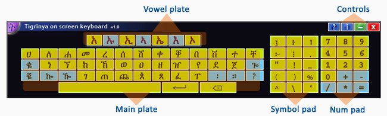

| |
|
|
|
Tigrinya on screen keyboard
The Tigrinya alphabets set has 32 rows with 7 columns each and 5 rows of irregular letters with 5 columns each. Thus a total of 249 letters with out the punctuation marks and numbers. This fairly huge number of letters, certainly requires some kind of logical arrangement and input mechanism in order to minimize the number of keys set on the keyboard. Therefore in this particular virtual keyboard adheres the following scheme in arranging and composing letters:
Arrangement: The initials of the basic and irregular letters are grouped in one and the 7 vowels in another group and additionally the numbers and common symbols each in separate groups. This arrangement results in a keyboard with about 80 keys, which is relatively easy to learn.
Composing mechanism: the method used here many times requires two clicks to get a Tigrinya letter, considering the number of keys avoided from over crowding the keyboard that is a fine bargain. The details of the method used is discussed below.
The Tigrinya on screen keyboard has four sections, reflecting the arrangement mentioned above, these sections represent a major subdivision of the characters available on the keyboard based on nature of the letters.
The sections are:- The main plate
- The vowel plate
- Symbol pad
- Number pad
- And the usual window control box. All highlighted in the picture below.

The vowel plate comprises the seven vowels states, and The main plate comprises the 31 initials of the basic 32 rows, that is without the 'አ' letter, since it is already included with the vowels, and initials of the 5 irregulars, plus the 2 most used punctuation marks and the Space, Return and Backspace buttons, a total of 39 keys.
To compose a Tigrinya letter, first select the initial of the row from the main plate, then use the vowel plate to change its vowel state as required.For example, to type 'ሁ' first click on 'ሀ' in the main plate then 'ኡ' in the vowel plate and so on. The following table shows a sample of how to write the whole 'ሀ' series, and the same procedure goes to others:
| ሀ + አ | = ሀ |
| ሀ + ኡ | = ሁ |
| ሀ + ኢ | = ሂ |
| ሀ + ኣ | = ሃ |
| ሀ + ኤ | = ሄ |
| ሀ + እ | = ህ |
| ሀ + ኦ | = ሆ |
Note. The five irregulars ቈ, ቘ, ኰ, ዀ and ጐ do not change for the second and seventh vowel states, as should be expected.
This mechanism of writing is different from the one used in GeezIME by using physical keyboards which at times may requires more number of keystrokes, that is so because the English keyboard has less number of keys than is required to write all Tigrinya letters, but since 'on screen keyboards' are virtual and there is no limitation to the number of keys put on it, the Tigrinya on screen keyboard uses this freedom to build a structure that gives more priority to the ease of writing Tigrinya language. This is done in the hope that the arrangement does not cause discomfort to the user and also to promote and prepare the user to touch input enabled computers and devices which are not constrained to use physical keyboards; and with time this devices are becoming more and more common.
Note. Some keys found on the usual physical keyboard, such as Esc, Control etc have been left out, because they are not needed while composing Tigrinya text and additionally the functions of most such keys can be done using the mouse, and hence their inclusion would unnecessarily increase the number of keys on the keyboard.
|
|
| GeezIME 3.0 | 2014 | EriLingual Solutions |
|
|